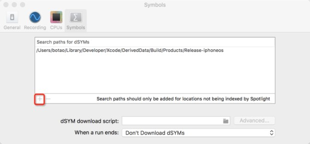
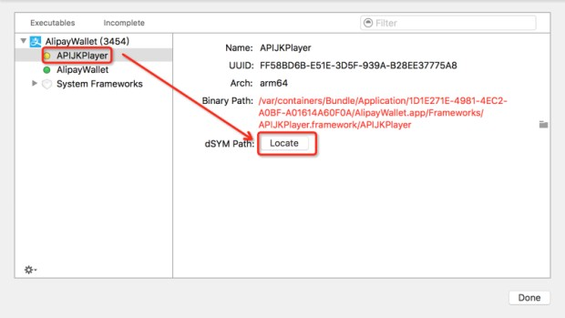

解决Xcode的Instruments无法找到DSYM文件问题
都知道Instruments是神器，但要用的时候发现，跟别人看到的数据不一样。
别人看到的是各种类名、方法名
自己看到的只有十六进制地址
Instruments找不到调试符号表DSYM？一脸懵逼！
问题
都知道Instruments是神器，但要用的时候发现，跟别人看到的数据不一样。
别人看到的是各种类名、方法名
自己看到的只有十六进制地址
Instruments找不到调试符号表DSYM？一脸懵逼！
DSYM
什么是DWARF，他与熟悉的dSYM文件什么关系？查了一下。
DWARF与dSYM的关系是，DWARF是文件格式，而dSYM往往指一个单独的文件。在Xcode中如果不做特殊制定，debug information是被保存在executable文件中，可以使用dsymutil从executable中提取dSYM文件。
解决
问题是找不到DSYM文件，所以解决步骤分2步：
- 人肉找
- 找到后，告诉Instruments
Xcode部分
- 定位到build settings-build option-Debug Information Format，设为
DWARF with dSYM File
- 清理工程Clean Product (快捷键Shift + Command + K)
- 创建工程Build Product (快捷键Command + B)
- 在编译日志中找到刚刚生产的dsym文件路径，推荐在右上角输入关键字
dsym过滤信息
点开后看到路径
一般路径格式：/Users/YourUserName/Library/Developer/Xcode/DerivedData/YourProjectName/Build/Products/<mode>-iOS/YourProjectName.app.dSYM
Instruments部分
- 偏好设置中，设置DSYM文件所在文件夹，可以设置多个，比如Debug、Release2个路径
 - 好了，试一试。如果还没有符号信息，没关系，继续手机操作，然后终止
- 打开Instruments-File-Symbols，展开你的工程，选中后设置下
dSYM Path。再回头看刚才的记录数据，都有符号信息了。
